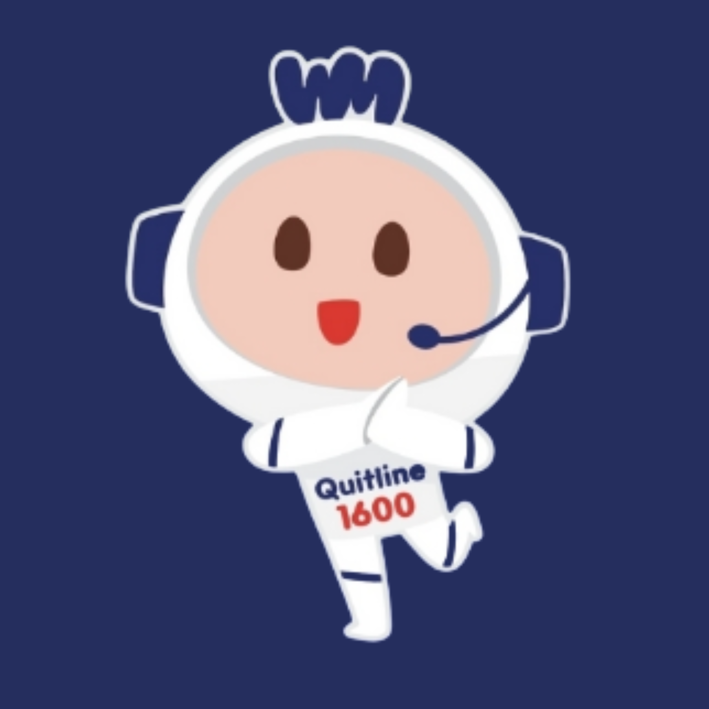

สายด่วนเลิกบุหรี่ 1600
คุณไม่จำเป็นต้องเริ่มต้นคนเดียว
เราพร้อมช่วยคุณลดหรือเลิกบุหรี่ บุหรี่ไฟฟ้า และนิโคติน
ไม่ว่าคุณกำลังคิดจะลด พร้อมจะเลิก หรืออยากกลับมาเริ่มใหม่อีกครั้ง คุณสามารถเลือกเริ่มต้นในช่องทางที่สะดวกสำหรับคุณ
ดูขั้นตอนก่อนตัดสินใจไม่ว่าคุณจะเริ่มจากตรงไหน
-
ผู้ที่สูบบุหรี่
เริ่มต้นลดหรือเลิกได้ตามจังหวะที่เหมาะกับคุณ
-
ผู้ที่ใช้บุหรี่ไฟฟ้าหรือนิโคติน
เราพร้อมช่วยแม้คุณไม่ได้สูบบุหรี่มวน
-
ผู้ที่กำลังคิดจะลดหรือเลิก
ยังไม่ต้องพร้อม 100% ก็เริ่มคุยกับเราได้
-
ครอบครัวและเพื่อน
เรียนรู้วิธีช่วยเหลือคนที่คุณห่วงใย
เลือกช่องทางที่เหมาะกับคุณ
เลือกวิธีที่สะดวกสำหรับคุณ เริ่มจากการโทรหรือพิมพ์ข้อความก็ได้
พร้อมคุยตอนนี้
โทร 1600
พูดคุยกับผู้ให้คำปรึกษา เพื่อวางแผนลดหรือเลิกในแบบที่เหมาะกับคุณ
โทร 1600ยังไม่สะดวกโทร

น้องวันใหม่ AI QuitBot
ผู้ช่วยตลอด 24 ชั่วโมง สำหรับเริ่มต้นพูดคุย รับคำแนะนำ และค้นหาแนวทางที่เหมาะกับคุณ
LINE ID: @wanmai1600
เริ่มแชท
สแกนเพื่อเริ่มแชท
เมื่อคุณติดต่อเรา
-
เลือกช่องทางที่สะดวก
โทรหรือแชท เลือกได้ตามที่คุณสะดวกในตอนนั้น
-
เรารับฟังและทำความเข้าใจ
ไม่มีการตัดสิน เราฟังสถานการณ์ของคุณก่อนเสมอ
-
ร่วมกันมองหาทางเลือก
คุยหาแนวทางที่เหมาะกับคุณโดยเฉพาะ
-
คุณเลือกขั้นตอนต่อไป
คุณเป็นคนตัดสินใจว่าจะก้าวต่อไปอย่างไร
สิ่งที่ควรรู้เกี่ยวกับบุหรี่ไฟฟ้า
บุหรี่ไฟฟ้าอาจดูต่างจากบุหรี่มวน แต่ละอองที่สูดเข้าไปไม่ใช่เพียงไอน้ำ และอาจมีนิโคตินหรือสารอื่นร่วมด้วย
-
ทำไมถึงอยากสูบซ้ำ
นิโคตินทำให้เกิดการพึ่งพาและอาจทำให้รู้สึกอยากใช้ซ้ำบ่อยขึ้น
-
สูบบ่อยโดยไม่ทันสังเกต
บุหรี่ไฟฟ้าอาจหยิบใช้ได้ง่ายและต่อเนื่องจนสังเกตปริมาณการใช้ได้ยาก
-
ไม่ใช่แค่ไอน้ำ
ละอองอาจมีนิโคติน สารเคมี หรืออนุภาคขนาดเล็ก
-
ผลกระทบระยะยาว
ผลระยะยาวยังอยู่ระหว่างการศึกษา แต่ไม่ได้หมายความว่าบุหรี่ไฟฟ้าปลอดภัย
อยากลดการสูบ? แต่ยังไม่สะดวกโทร? แชทกับเรา →
เริ่มจากเรื่องที่ใกล้ตัวคุณ
-
เตรียมตัวให้พร้อม
ตั้งเป้าหมายที่ทำได้จริงสำหรับตัวคุณ
-
รับมือกับความอยาก
วิธีตั้งรับเมื่อความอยากเกิดขึ้นกะทันหัน
-
รู้จักตัวกระตุ้น
สังเกตสถานการณ์ที่มักทำให้คุณอยากใช้
-
บุหรี่ไฟฟ้าและนิโคติน
ทำความเข้าใจการพึ่งพานิโคตินให้มากขึ้น
-
รับมือกับแรงกดดันจากเพื่อน
พูดปฏิเสธอย่างมั่นใจโดยไม่กระอักกระอ่วน
-
กลับมาเริ่มใหม่
พลาดไปบ้างก็เริ่มต้นใหม่ได้เสมอ
ช่วยคนที่คุณห่วงใย
เรียนรู้วิธีพูดคุย ให้กำลังใจ และช่วยเหลือโดยไม่กดดันหรือตัดสิน
คำถามที่คุณอาจกำลังสงสัย
บุหรี่ไฟฟ้าแตกต่างจากบุหรี่มวนอย่างไร?
บุหรี่ไฟฟ้าไม่มีควันหรือกลิ่นแบบบุหรี่มวน แต่ละอองที่ปล่อยออกมาไม่ใช่เพียงไอน้ำ และอาจมีนิโคติน สารเคมี หรืออนุภาคขนาดเล็ก
ละอองบุหรี่ไฟฟ้าเป็นเพียงไอน้ำหรือไม่?
ไม่ใช่ ละอองจากบุหรี่ไฟฟ้าไม่ใช่เพียงไอน้ำ อาจมีนิโคติน สารเคมี หรืออนุภาคขนาดเล็ก
ใช้บุหรี่ไฟฟ้าทั้งวันเกี่ยวข้องกับนิโคตินอย่างไร?
นิโคตินทำให้เกิดการพึ่งพาและอาจทำให้รู้สึกอยากใช้ซ้ำบ่อยขึ้น บุหรี่ไฟฟ้าอาจหยิบใช้ได้ง่ายและต่อเนื่องจนสังเกตปริมาณการใช้ได้ยาก
ยังไม่พร้อมเลิก สามารถติดต่อมาปรึกษาได้ไหม?
ได้ คุณไม่จำเป็นต้องพร้อมเลิกทันที เริ่มต้นเมื่อคุณพร้อม และเลือกก้าวถัดไปได้เอง
โทรและแชทต่างกันอย่างไร?
โทร 1600 เหมาะสำหรับผู้ที่พร้อมพูดคุยและต้องการคำแนะนำผ่านโทรศัพท์ ส่วนแชทกับเราเหมาะสำหรับผู้ที่ยังไม่สะดวกโทรและอยากเริ่มต้นจากการพิมพ์ข้อความ
แชทเป็น Bot หรือเจ้าหน้าที่?
แชทกับเราคือการสนทนากับน้องวันใหม่ AI QuitBot